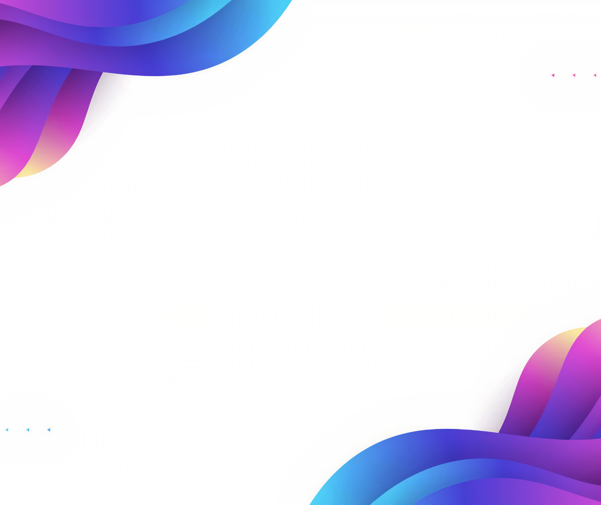
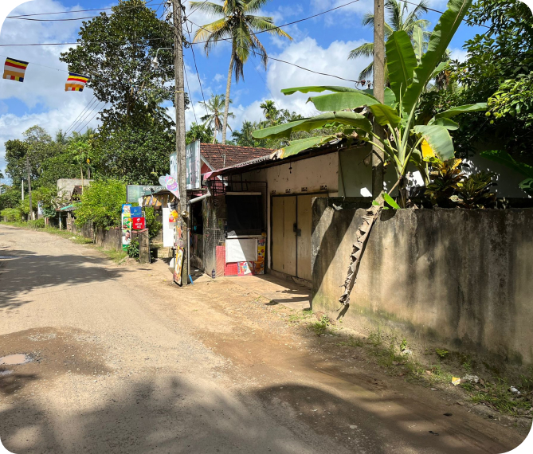
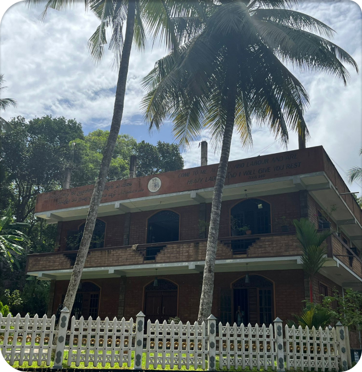
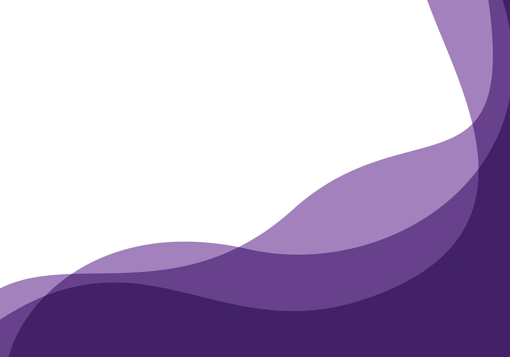

Missie?
Onze missie is om zoveel
mogelijk mensen en organisaties te verbinden,
mensen met dezelfde visie.
Doel?
Als uiteindelijk doel,
samen een beweging in gang te zetten,
waar niemand meer om heen kan.
Zorg?
Een betere, betrouwbaar zorgsysteem, met aandacht voor de mens,
waarbij kwetsbaarheid een kracht is
en afkomst en geld er niet toe doet.
Verbinding?
Wij willen verbinden en indien nodig uitleg gaan geven,
hoe het voelt om in de zorg te hebben gewoond.
Maar ook hoe het echt anders kan.
Over De Ervaringspro

Bij de Ervaringspro zijn wij er voor jou. Onze ervaringen
van de zorg, bieden jou een oplossing. Lukt het jou
maar niet om gelukkig te zijn of ligt je leven overhoop?
Wij zijn er voor jou. Hoe dieper de put, hoe verder je
kan komen. Er is bijna altijd een passende oplossing.
Is die er niet, zijn we daar ook eerlijk over. Ben je
gemotiveerd en wil je geen hulpverlener, maar toch de
ommekeer in je leven maken? neem contact op. Maak
nieuwe vrienden! We helpen je op weg en blijven aan je
zijde. Zet de knop op in jou leven en pak de regie terug.
zet alles weer op de rit. Alles is mindset en
zelfvertrouwen. Wij gaan je helpen. Wij weten de weg.
De Ervaringspro: "Voor elkaar met elkaar"

Thithagalle Is het drop waar het allemaal gebeurt.
Het zit 15 Minuten van de zee in de jungle.
De natuur
Waar moeten wij beginnen? De natuur in Sri Lanka is adembenemend mooi. Zodra je de grote stad verlaat, is het één en al jungle en werkelijk overal is het intens groen. Het steeds veranderende landschap is
heerlijk om naar te kijken. Veel mensen leven hier ook echt nog samen met de natuur.
Heel bijzonder om te zien.
De mensen in Sri Lanka zijn ontzettend vriendelijk.
Iedereen is heel behulpzaam en de meeste mensen zijn oprecht in je geïnteresseerd.
Natuurlijk proberen straatverkopers iets aan je te verkopen,
maar zodra je ‘nee’ zegt, laten ze je met rust. Fijn!
De apen komen je voorbij op een veilig stukje paradijs.
In het betoverende Sri Lanka leer jezelf kennen door andere
tot je toe te laten.
Locatie

Kathaluwa, Ahangama
2973+P5 Ahangama, Sri Lanka

Samenwerking
Yaaluwacare
Dit is ons vriendenhuis.
Gebouwd in etappes met hulp van de lokale bevolking en vrienden.
Oude vrienden maar ook nieuwe lokale vrienden. Wij leven
in onze droom en helpen anderen met hun dromen. Met de juiste mindset, en de juiste hulp is niets onmogelijk, ook jou
mogelijkheden zijn ongekend.
Wij zijn Nederland 14 jaar geleden ontvlucht, vanwege de
bureaucratie. En hebben ons hier gevestigd.
Sinds 2019 richten wij ons op individuele hulp voor
vastgelopen mensen, waarbij maatwerk de standaard is.
Wij zijn de samenwerking aangegaan met de Ervaringspro
(in oprichting), en hebben de zorg in Sri Lanka in kaart
gebracht.
Wij bieden inzicht in een compleet andere wereld, maar ook
in jezelf . Een droom voor toeristen, is soms een nachtmerrie
voor de lokale bevolking. Door nauwe samenwerking
verbinden we, brengen mensen uit beide landen samen.
Wij geloven in vriendschap, ademhalingstherapie, gezonde
voeding, sport, yoga, mediteren en mindset.
Dit alles geeft zelfvertrouwen de basis tot jou mooiste
leven.
Yaaluwa Care
Doc Care Clinic
De Dog Care Clinic is zowel in Duitsland als in Sri Lanka
geregistreerd als een non-profitorganisatie . Marina Möbius
draagt een groot deel van de kosten uit eigen zak. De rest zijn donaties
van dierenliefhebbende mensen.
Helaas
krijgen we geen enkele steun van de Sri Lankaanse
overheid terwijl elke vaccinatie en elke castratie een
belangrijke bijdrage levert aan het oplossen van het
zwerfafvalprobleem. We zijn daarom dringend afhankelijk
van donaties
Dieren hebben het allesbehalve makkelijk in Sri Lanka. Helaas is
het bewustzijn van mensen over dieren nog zeer beperkt.
Er leven naar schatting 20 miljoen zwerfhonden
op het eiland, die aan ziektes lijden, onbehandeld zijn
en verhongeren.
Ze worden vaak vergast, doodgeschoten of gedood.
Veel mensen die honden hebben, zijn arm en
kunnen de rekeningen van de dierenarts niet betalen, dus
doen we de meeste behandelingen gratis.
Link: https://www.dogcare-clinic.com/de/

Traject jongeren

Onderdelen mogelijkheden:
-Voeding en sport
-NLP
-Natuur, respect
-Vrijwilligerswerk
-Spiritualiteit
-Zelfinzicht, zingeving en mindset
-Surfen
-Ademhaling sessies
-Wat is trauma De Fontijn.
-Mediteren
Ongeacht de hulpvraag, gaan wij het gesprek aan.
Wat vraagt de jongere en wat wij kunnen bieden.
We vragen intrinsieke motivatie. wij doen niet aan
dwang. We luisteren aandachtig en handelen direct. Als we niet direct
de juiste time out plek of vriend
kunnen vinden, laten we je niet los
Het hele traject is bedacht om de mindset, en het
zelfvertrouwen te vergroten, de zwakkere punten
om buigen in krachten. Wij verblijven in een gezin,
en wij draaien volledig mee in het gezinssysteem.
Elk tafelmoment is ook een moment om even je
gevoel te bespreken, wat gaat er goed, wat kan
beter.
Alles wordt besproken van seksualiteit,
discriminatie, relaties, maar ook spiritualiteit,
ademhalingstechnieken. Niets is onbespreekbaar.
Hoe je de tijd hier met elkaar hier ervaart, is jouw
beleving. Die is voor iedereen anders net als het
programma. Voor iedereen zal de ervaring anders
zijn, maar het doel blijft hetzelfde. Je gaat terug als
de beste versie van jezelf, met meer zelfvertrouwen,
nieuwe vrienden en een duidelijk perspectief.
De Ervaringspro